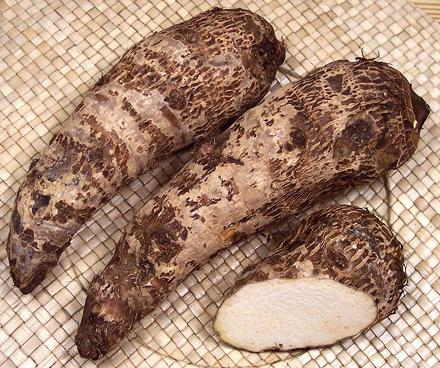
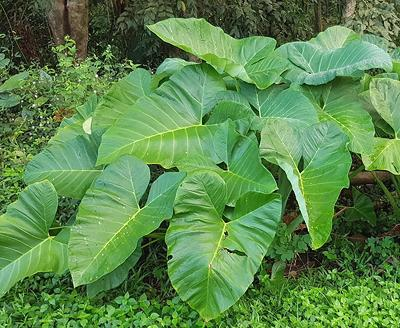

Malanga

[Yautía (Puerto Rico, Dominican), Malanga (Cuba); Malusa (Bolivia);
Bore (Colombia); Tiquizque, Macal (Costa Rica); Mafala (Mexico); Quequisque
(Nicaragua); Otoe (Panama); Ocumo (Venezuela); Tania, Mangarito (Brazil), New
Cocoyam (Africa), 'Ape (Polynesia); Tayer (Suriname, Netherlands); Arrowleaf
Elephant ear, American Taro; Xanthosoma saggitifolium (malanga blanca),
X. atrovirens (malanga amarilla), X. violaceum (malanga lila),
X. maffaffa (mangarito)]
Native to northern South America, this arum is now also grown all through
the Caribbean region and Central America, and is particularly popular in
Cuba and Puerto Rico. As "New Cocoyam", Malanga is also now grown in West
Africa as an alternative to yams and taro (Cocoyam). It is also grown in
Hawaii as 'Ape (say "Ah-pay"), and the Philippines.
The corm is somewhat mucilaginous and cooks to a smoother texture than
potato, with chunks holding their shape well. The flavor is closer to potato
than other tropical root vegetables, but is a little more nutty than potatoes
are. The longer of the photo specimens, obtained from a multi-ethnic market in
Los Angeles, was 8-1/2 inches long, 2-5/8 inches in diameter at the thickest
part, and weighed 14 ounces.
More on Arums.
Buying:
These Corms are now widely available in
North America, from markets serving Hispanic, Southeast Asian, and
Philippine communities. A recent purchase from a Philippine market was
at 2017 US $2.49 / pound, but they are often at a lower price in
markets serving a Hispanic community.
Storing:
Fresh Malanga should be stored at a cool
room temperature, not below 45°F/7°C.
Malanga Leaves

[Macabo, Taioba (Brazil); Tannia, Tannier (Caribbean); Nkontomire (Ghana);
Xanthosoma saggitifolium]
These leaves are now eaten in many tropical and sub-tropical regions
around the world. They have a lower calcium oxalate level than
Taro Leaves so are easier to prepare.
While the leaves look similar at first glance, Malanga Leaves have the stem
attached at the point of the "V" notch, while Taro Leaves are attached several
inches below the "V" notch. Malanga Leaves also grow very much larger.
Buying:
Not easy in North America. There is a known
experimental farm at University of Massachusetts, Amherst, which sells the
leaves in local markets. It may also be available in Florida where Malanga
is a commercial crop. It is also considered an invasive weed there. It is
frost sensitive, but should be easy to grow in warmer regions. It is best
grown in raised beds of well drained, just moist soil to prevent diseases.
Cooking:
Leaves and stems must be cooked because they contain
calcium oxalate, though not as much as spinach. It is usually cooked much like
Spinach. In Brazil, the leaf is stripped from the veins and stir fried in
Olive Oil with Garlic, and a minimal amount of water if needed. The leaves
take longer to cook than Spinach because they are quite a bit thicker. In
Suriname the leaves are often baked with a Maggi® cube and served as
a side dish. Young and tender leaves are also used in stews and soups.
Health & Nutrition
Malanga Leaf and Stems contain
calcium oxalate, but not as much as in Spinach. The leaf is 27% protein, high
in Vitamin C, and rich in Calcium Iron, Phosphorus, Potassium, and Manganese.
Photo by Obsidian Soul distributed under license Creative Commons
Attribution-ShareAlike v4.0 International.
am_malangz 170319 www.clovegarden.com
© Andrew Grygus - agryg@clovegarden.com - Photos on
this page not otherwise credited are ©
cg1.- Linking to and non-commercial use
of this page permitted.